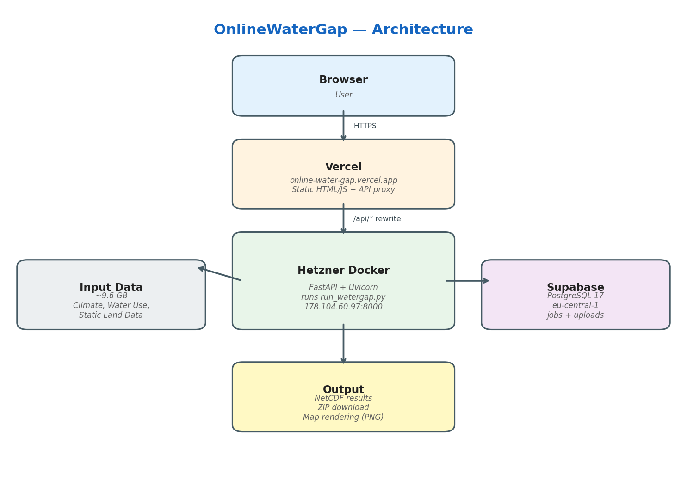

Online Infrastructure#
This section documents the architecture and deployment setup of the OnlineWaterGap web interface — a thin layer that makes ReWaterGAP accessible through a browser without modifying the core model code.
Overview#
OnlineWaterGap wraps the existing ReWaterGAP command-line application in a web-based frontend so that users can configure, launch, and visualise hydrological simulations from any modern browser.
The stack consists of three components:
Frontend — static HTML / JavaScript served by Vercel.
Backend — a FastAPI application running inside a Docker container on a Hetzner cloud server. It spawns
run_watergap.pyas a subprocess, exactly as a local user would on the command line.Database — a Supabase PostgreSQL instance that tracks simulation jobs and uploaded datasets.

High-level data flow of OnlineWaterGap.#
Request flow#
Browser
│
▼
Vercel (online-water-gap.vercel.app)
│ serves static HTML/JS
│ proxies /api/* via rewrite rules
▼
Hetzner Docker host (178.104.60.97:8000)
│ FastAPI + Uvicorn
│ starts run_watergap.py as subprocess
▼
WaterGAP simulation
│ reads input_data/ (9.6 GB, mounted read-only)
│ writes results to output_data/
▼
Supabase (eu-central-1)
│ jobs & uploads tables
▼
Browser receives status updates, logs, result ZIP
Repository layout#
All files specific to the online version live in the online/ directory,
keeping the original ReWaterGAP code base untouched:
online/
├── api/
│ ├── main.py # FastAPI application
│ └── static/ # Frontend (HTML, JS, CSS)
├── Dockerfile # Container image definition
├── docker-compose.yml # Service orchestration + volumes
├── .dockerignore # Files excluded from Docker build
├── run_web.py # Dev helper: installs deps + starts uvicorn
├── vercel.json # Vercel routing + API proxy config
└── .vercelignore # Files excluded from Vercel deploy
Frontend — Vercel#
The frontend is a static single-page application (no build step) hosted on Vercel.
Deployment#
Vercel is connected to the GitHub repository and deploys automatically on every push to
main.The
gh-pagesbranch is explicitly excluded invercel.json.outputDirectoryis set toonline/api/static.
API proxy#
To avoid mixed-content issues (the browser page is served over HTTPS while
the Hetzner backend listens on HTTP), Vercel rewrites all /api/*
requests to the backend:
{
"rewrites": [
{
"source": "/api/:path*",
"destination": "http://178.104.60.97:8000/api/:path*"
}
]
}
Backend — Hetzner + Docker#
The compute-heavy simulation runs in a Docker container on a Hetzner cloud server.
Docker image#
The image is based on python:3.10-slim and installs:
System libraries for HDF5 / NetCDF4 / Matplotlib
Python dependencies from
requirements.txt(unchanged from the original)fastapi,uvicorn, andpython-multipartas additional web dependencies
FROM python:3.10-slim
# ... system deps ...
COPY requirements.txt .
RUN pip install --no-cache-dir -r requirements.txt \
&& pip install --no-cache-dir fastapi "uvicorn[standard]" python-multipart
COPY . .
EXPOSE 8000
CMD ["uvicorn", "api.main:app", "--host", "0.0.0.0", "--port", "8000"]
Volumes#
docker-compose.yml defines four volumes:
Volume |
Mode |
Purpose |
|---|---|---|
|
read-only |
Climate forcing, water use, static data |
|
read-write |
Per-run config, logs, status |
|
read-write |
User-uploaded NetCDF files |
|
read-write |
Simulation result files |
API endpoints#
Method |
Path |
Description |
|---|---|---|
GET |
|
Health check |
POST |
|
Start a new WaterGAP simulation |
GET |
|
Poll job status (running / completed / failed) |
POST |
|
Terminate a running simulation |
GET |
|
Download results as ZIP |
GET |
|
Stream simulation log |
GET |
|
List available input data bundles |
POST |
|
Upload a custom NetCDF file |
GET |
|
Render a spatial map (PNG) |
Database — Supabase#
A Supabase project (rewatergap, region eu-central-1) provides a
managed PostgreSQL 17 database with two tables:
jobs
Tracks every simulation run. Key columns: job_id, status,
config (JSONB), period_start, period_end, log_tail,
created_at, completed_at. Row-Level Security is enabled.
uploads
Stores metadata for user-uploaded NetCDF files. Key columns:
upload_id, filename, variables (text array),
file_size_bytes, created_at. Row-Level Security is enabled.
Changes relative to the original code base#
The online version deliberately keeps changes minimal. The core model
code (model/, controller/, calibration/, view/) and the
requirements.txt are identical to the upstream ReWaterGAP repository.
The only additions are:
File |
Purpose |
|---|---|
|
FastAPI wrapper that calls |
|
Browser-based frontend (single-page app) |
|
Replaces the original conda-based Dockerfile with a slim pip-based image that starts Uvicorn instead of a one-shot CLI run |
|
Adds volume mounts for input data, jobs, uploads, and output |
|
Developer convenience script (auto-installs FastAPI, starts server) |
|
Routes frontend traffic and proxies API calls to Hetzner |
|
Excludes Python / Docker files from Vercel build |
|
Excludes IDE / cache files from Docker build |
|
This documentation page |